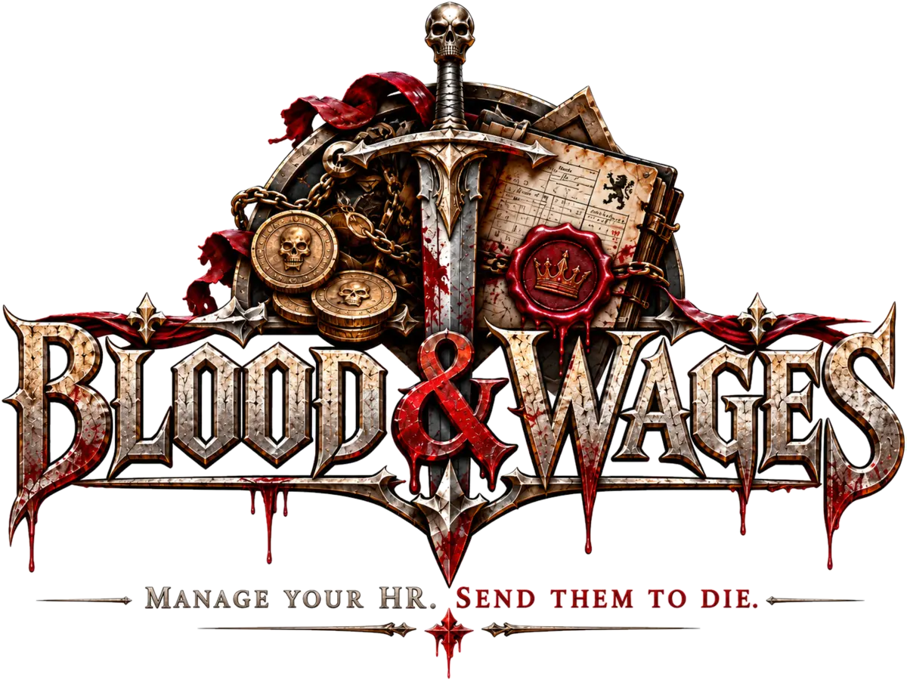

Prototype V0.2 — moteur data-driven

C’est terminé… Ils ont gagné, ces bâtards.
Garreth est mort. Ses hommes ont leurs viscères qui décorent la herse.
Ludwig aussi. Enfin… Ludwig, ça ne devrait surprendre personne. Je lui avais dit de ne pas charger une ligne d’orques avec douze hommes et une chèvre.
Et moi… Moi, je crois que mon compte est bon.
Écoute-moi, petit. J’ai toujours cru en toi ! En ton potentiel, en ta force. En ta détermination. Et aussi, je pense que tu es le dernier debout.
Tu as donc pour mission de nous venger. Prends la chevalière de la compagnie. Et fais-les payer !
C’est toi le capitaine… Bob ? … Tu t’appelles bien Bob ?
Create_Mercenary() — audit
Moteur de génération
Règles à définir
Création du capitaine
Vous vous appelez Bob ?
Game Over
La compagnie est dissoute
Reviens au menu pour lancer une nouvelle partie.
Quartier général
Le camp
Lunbrume, 1 Brumecendre
An 842 — Âge des Couronnes Brisées
« Le froid tue les pauvres. Les riches restent au chaud. »
Ma Compagnie
Compagnie sans nom
Effectifs
Mes mercenaires
Missions disponibles
Une seule mission est proposée pour l'instant.
Taverne — recrutement V1
Candidats du jour
Chaque matin, certains candidats sont engagés ailleurs et de nouveaux arrivent sur les places libres.
Intendance
Stock & équipement
Cette scène accueillera le stock de la compagnie, les échanges d’équipement et les retours de mission.
Banc de test
Générateur de mercenaires
Le mercenaire utilise les biais du capitaine : +9 points sur son peuple, culture du capitaine ×2 si compatible, ascendance du capitaine ×2 si applicable.
Mission tactique V1